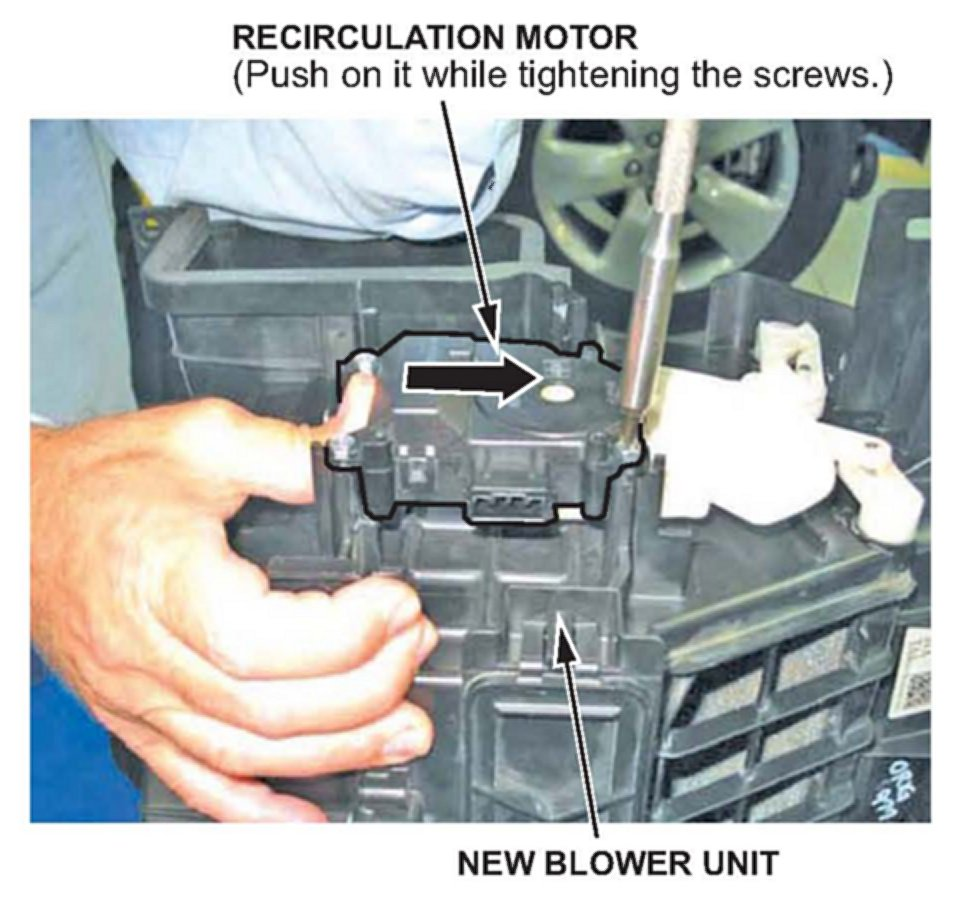

A/C - Whistling Noise In Recirculation Mode
08-014October 16, 2008
*Applies To:
2007 MDX - ALL*
2008 MDX- From VIN 2HNYD28..8H500001 thru 2HNYD28..8H514713
A/C Whistles While in Recirculation Mode
(Supersedes 08-014, dated April 11, 2008, to update the information marked by asterisks)
SYMPTOM
A whistling noise occurs when recirculation mode is selected while the vehicle is driven above 50 mph.
PROBABLE CAUSE
The recirculation door is not completely closed, causing an air leak and creating a whistle.
CORRECTIVE ACTION
Replace the blower unit.
PARTS INFORMATION
Blower Sub-Assembly: P/N 79305-STX-A02
WARRANTY CLAIM INFORMATION
In warranty:
The normal warranty applies.
Operation Number: 612100
Flat Rate Time: 0.7 hour
Failed Part: P/N 79305-STX-A02
Defect Code: 03214
Symptom Code: 04201
Template ID: 08-014A
Out of warranty:
Any repair performed after warranty expiration may be eligible for goodwill consideration by the District Parts and Service Manager or your Zone Office. You must request consideration, and get a decision, before starting work.
REPAIR PROCEDURE
1. Remove the glove box:
^ Refer to page 20-126 of the 07-08 MDX Service Manual, or
^ Online, enter keywords GLOVE BOX, and select Glove Box Removal/Installation from the list.
2. Remove the blower unit:
^ Refer to page 21-115 of the service manual, or
^ Online, enter keywords BLOWER REMOVAL and select Blower Unit Removal/Installation from the list.
3. Remove the blower motor, the dust and pollen filter, and the recirculation control motor from the old blower unit.
4. Install the blower motor, the dust and pollen filter, and the recirculation control motor on the new blower unit.

NOTE:
Make sure the recirculation control motor is adjusted to the highest point possible by pushing the motor toward the top of the unit, and then tightening the screws.
5. Install the blower unit in the reverse order of removal.

Disclaimer